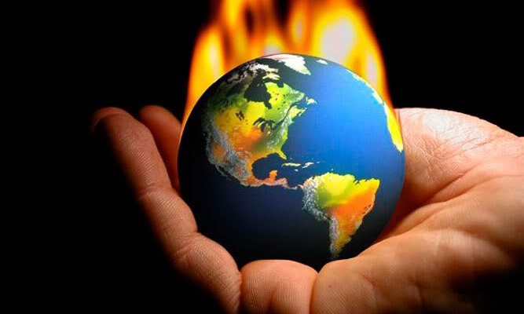

CONCLUSION
The major reason of animals being extinct is habitat loss. They lose their place to live because of selfish humans. Also, we should stop using plastic. Every year there are over 50 billion plastic bags been produced. You can use reusable bags. If you use 5 plastic bags per week, it would be about 28 plastic bags per month and 336 bags per year. Plastic bags get deposit into the ocean sea animals eat them and die. Cutting shark fin for the soup make the sharks die. Without fins, they cannot swim, they can’t find food to eat. They will eventually die of hunger. All species live together, we should learn to cooperate. Without them, we would also die of hunger.
